Quick Navigation
Overview
TournaQ is a beach volleyball scoring app designed for quick match setup, live scoring, match history and future tournament management.
Main App Areas
Home Screen
The Home screen is the main entry point. Access Quick Start Game, Match History and upcoming tournament features from here.
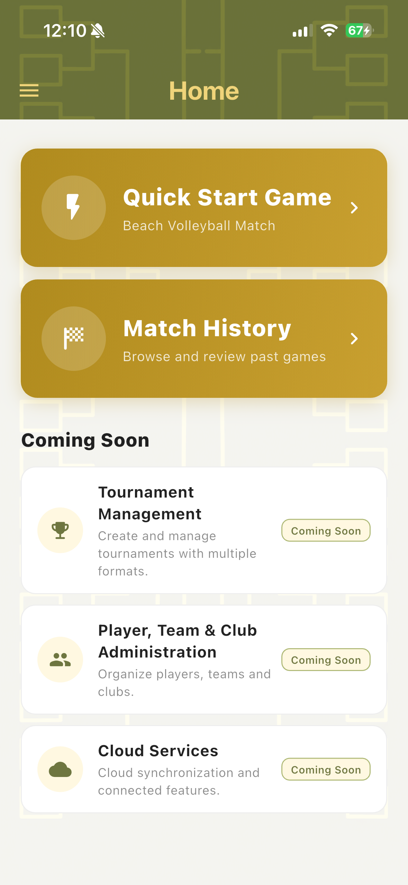
Navigation Drawer
The navigation drawer opens from the menu icon and provides access to Home, Quick Start Game, Sponsoring & Promo, Contact & About and Settings.
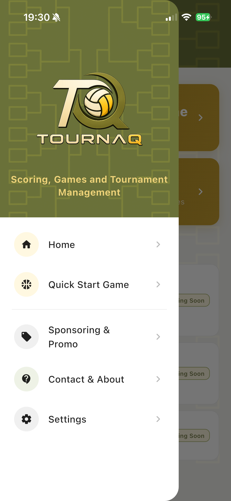
Games & Match History
The Games screen shows in-progress and completed matches with team names, set scores, match status and the winner when the match is completed.

Quick Start Game
Quick Start Game allows users to create a beach volleyball match quickly without complex setup.
Select Match Format
Choose One Set or Best of Three Sets as the match format.
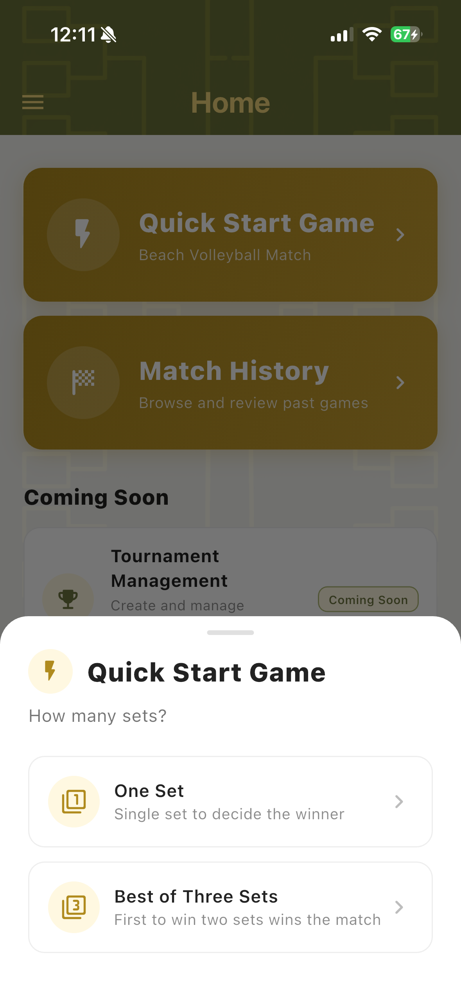
Choose Teams
Select existing teams, create new teams manually, or let the app generate random teams.
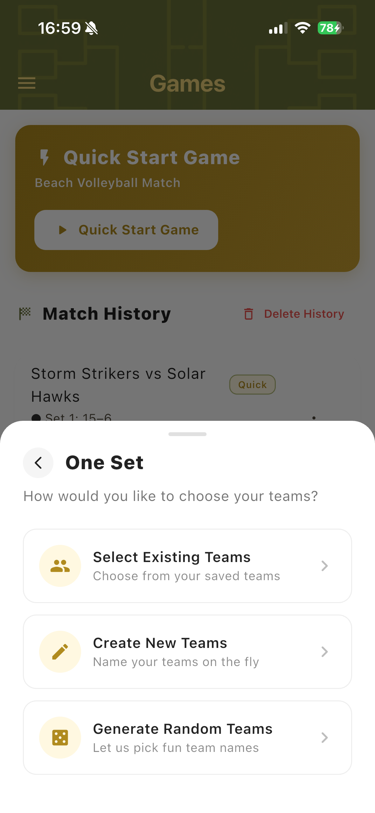
Random Team Generator
Generate fun random team names, re-roll if needed and start the match.
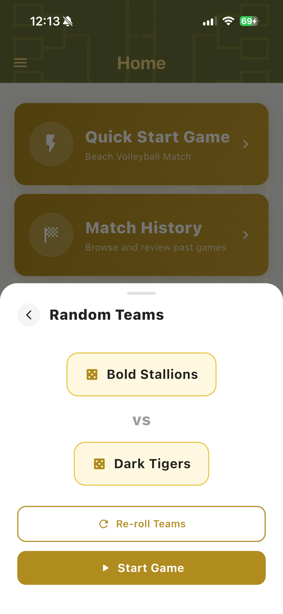
Scoreboard
The Scoreboard is the main live scoring screen. It displays team names, scores, sets, player names, active player information and match actions.
Vertical Scoreboard
The vertical scoreboard provides a complete view for live scoring, including all information needed during a match.

Landscape Scoreboard
The landscape scoreboard is optimized for horizontal mobile use during live matches.
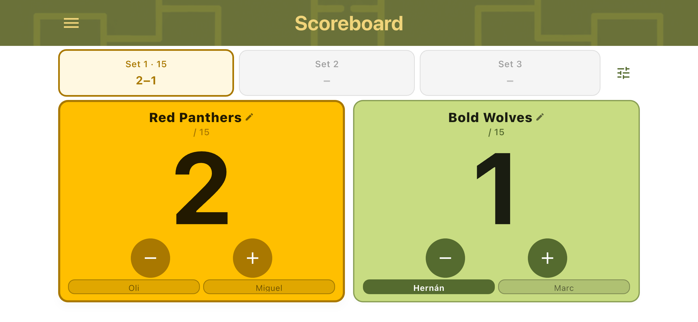
Match History
The Match History view shows a point-by-point log of the match, including who scored each point and when sides switched.
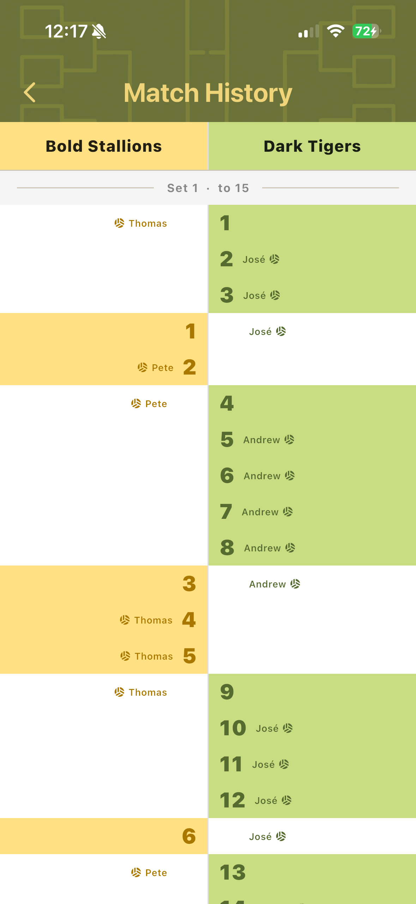
Match Controls
Match controls help you manage side changes, team positions and service order during live scoring.
Side Change Reminder
When the total score reaches the target, a dialog prompts teams to switch sides. Confirm to continue the match.
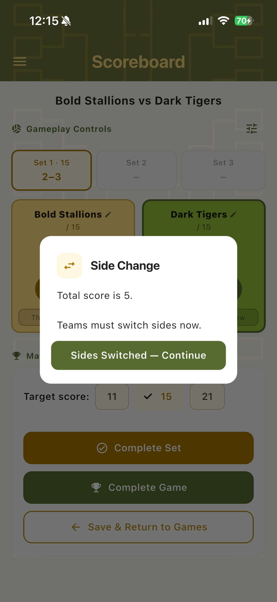
After Side Change
After confirming a side change, the teams are automatically swapped on the scoreboard so the display always reflects the physical court position.
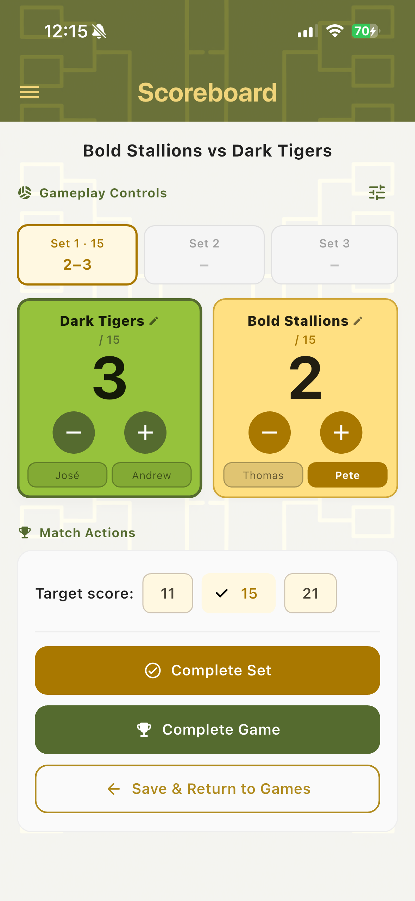
Change Service
The active server is highlighted on the scoreboard. Service changes automatically when the non-serving team scores, and can also be adjusted manually.
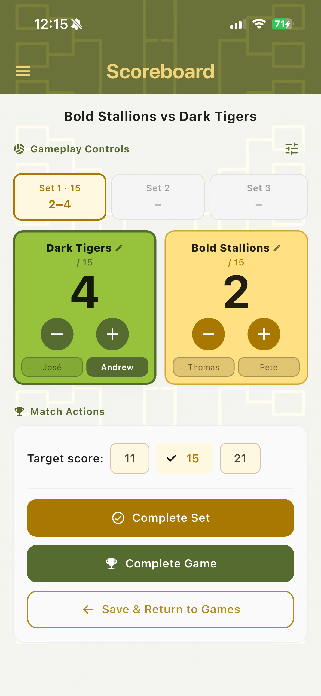
Set & Game Completion
Set Complete
When a team reaches the target score the set is completed. The result is locked and you can proceed to the next set or complete the game.
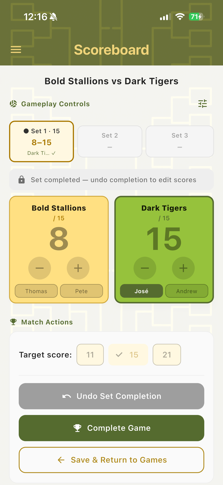
Game Complete
When the match is decided the game completion screen shows all set results and the winner. The match is saved to Match History.
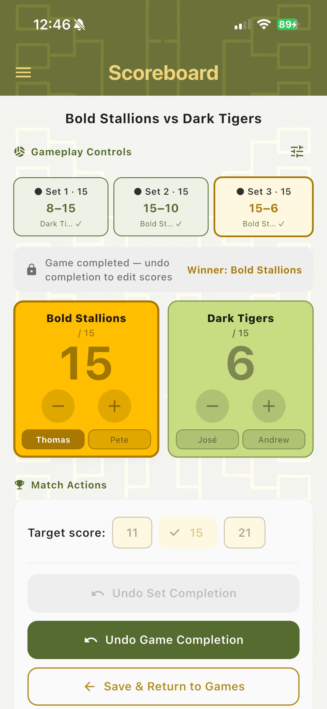
Editing Players
Player Names & Service
Player names are shown directly on the scoreboard. The highlighted chip indicates the active server for that team.
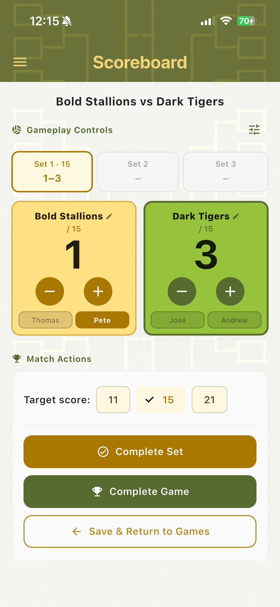
Player Management
Future versions may expand player administration as part of broader tournament management.
Player Management Screenshot
Team Management
Team management will continue to evolve as TournaQ grows beyond scoring.
Team Management Screenshot
Common Match Workflow
- Open TournaQ.
- Tap Quick Start Game.
- Select One Set or Best of Three Sets.
- Choose existing teams, create new teams or generate random teams.
- Start the game.
- Use the plus and minus buttons to score.
- Confirm side changes when prompted.
- Complete the set.
- Complete the game.
- Return to Games to review match history.
Future Tournament Management
Tournament Setup
Future development will expand TournaQ toward tournament setup and administration.
Tournament Setup Screenshot
Standings
Planned tournament functionality may include standings and competition progress tracking.
Standings Screenshot
Brackets
Bracket management is part of the long-term direction toward full tournament management.
Brackets Screenshot